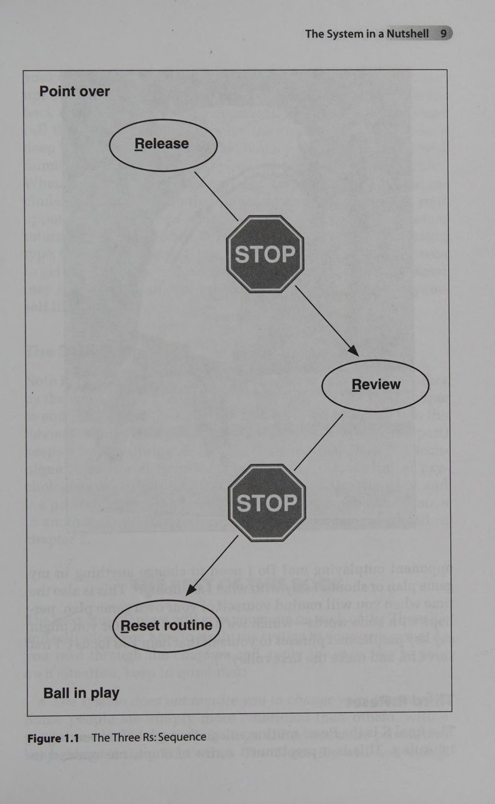

Pete Sampras - Hiện thân tiêu biểu của sự tập trung và bản lĩnh tâm lý thép trên sân đấu
Lời Tựa
Lời Tựa Từ Một Cựu Vận Động Viên Chuyên Nghiệp ATP Tour
Trong suốt sự nghiệp thi đấu đỉnh cao của mình, tôi đã từng nếm trải không ít những trận đấu mà ở đó tôi không hề bị đối thủ đánh bại, mà tự đánh bại chính bản thân mình. Cơn giận dữ và nỗi thất vọng tột cùng đã nuốt chửng tâm trí tôi. Tôi đánh mất hoàn toàn khả năng tập trung và không còn có thể kiểm soát những gì mình cần phải thực hiện trên sân đấu. Chính từ những trải nghiệm đắt giá đó, tôi thấm thía sâu sắc rằng việc học cách gột rửa những cảm xúc tiêu cực là một trong những bài học sinh tử nhất mà một vận động viên quần vợt phải làm chủ nếu muốn nâng cao hiệu suất thi đấu.
Hệ thống 3 chữ R (Three R's: Release - Review - Reset) là một công cụ tâm lý học thể thao phi thường giúp bất kỳ tay vợt nào giải quyết dứt điểm điểm số vừa trôi qua và chuẩn bị một trạng thái tinh thần thanh thản, sắc bén cho điểm số kế tiếp. Khi trận đấu rơi vào bế tắc, con người ta rất dễ rơi vào cái bẫy tự sỉ vả bản thân và thi đấu trong tâm trạng tiêu cực. Bằng cách áp dụng kỷ luật của 3 chữ R, bạn sẽ luôn làm chủ được cảm xúc, giữ vững nhịp thi đấu và đạt được sự tự tin tuyệt đối.
Lời Mở Đầu Của Các Tác Giả
TS. Karl A. Slaikeu (Chuyên gia Tâm lý Thể thao) & Robert Trogolo (Cựu Tay vợt Chuyên nghiệp ATP)
Cuốn sách này dành cho mọi người chơi quần vợt khao khát bước lên một nấc thang đẳng cấp mới trong sự nghiệp. Được đồng tác giả bởi một tiến sĩ tâm lý học thể thao hàng đầu và một cựu tay vợt cự phách từng nhiều năm chinh chiến trên đấu trường chuyên nghiệp thế giới, tác phẩm này được xây dựng trên một tiền đề giản dị nhưng vô cùng sâu sắc mà đa số người chơi đều bỏ quên: Những gì bạn làm trong khoảng thời gian quả bóng ngừng lăn có tầm quan trọng quyết định không kém gì những gì bạn làm khi vung vợt chạm bóng.
Trong mỗi một giờ thi đấu trên sân quần vợt, quả bóng thực sự chỉ bay qua lại trên không trung từ 4 đến 15 phút. Điều này đồng nghĩa với việc bạn dành tới hơn 75% thời lượng trận đấu để đi lại, nhặt bóng, lau mồ hôi và chìm đắm trong những dòng suy nghĩ miên man. Nếu bạn không kiểm soát được khoảng thời gian 20 đến 25 giây giữa các điểm số (between-point time), những con quái vật tâm lý sẽ lập tức tấn công bạn. Hệ thống 3 chữ R kết hợp kỹ thuật DỪNG (STOP technique) từ tâm lý học lâm sàng với các thói quen hành vi thể thao sẽ biến khoảng thời gian chết này thành vũ khí bí mật giúp bạn tái tạo năng lượng và chinh phục mọi đỉnh cao.
PHẦN 1: NỀN TẢNG HỆ THỐNG 3 CHỮ R
Chương 1: Tổng Quan Về Hệ Thống 3 Chữ R
The System in a Nutshell
Khoảng Thời Gian Trống Giữa Các Điểm Số: Nơi Trận Đấu Được Định Đoạt
Bạn thường làm gì giữa hai điểm số? Khi một pha bóng kết thúc, hầu hết các tay vợt nghiệp dư thường bước đi một cách vô thức, đưa mắt nhìn ra phía khán đài, lắc đầu bực bội hoặc lẩm bẩm nguyền rủa lỗi đánh hỏng vừa rồi. Họ bước vào điểm số tiếp theo với toàn bộ gánh nặng cảm xúc u uất của điểm số trước đó.
Hệ thống Huấn luyện Tâm lý 3 Chữ R (The Three R's Sport Psychology System) ra đời để thiết lập một cấu trúc kỷ luật thép cho khoảng thời gian 20 đến 25 giây này. Nó chia quá trình tâm lý giữa các điểm số thành ba giai đoạn tuần tự và khép kín:
1. Release (Giải phóng cảm xúc): Xả bỏ hoàn toàn mọi năng lượng tiêu cực, cơn giận dữ hay sự thất vọng ngay trong 3 đến 5 giây đầu tiên sau khi pha bóng kết thúc.
2. Review (Đánh giá thực tế): Dành 3 đến 5 giây tiếp theo để phân tích khách quan tình huống vừa diễn ra, nhận diện nguyên nhân kỹ chiến thuật mà không hề kèm theo bất kỳ sự phán xét hay tự trách móc bản thân nào.
3. Reset (Tái thiết lập): Dành 10 đến 15 giây còn lại để thực hiện thói quen chuẩn bị trước điểm số (routine), điều hòa nhịp thở, kích hoạt sự tập trung cao độ và hình dung đường bóng tác chiến kế tiếp.

Hình 1.1: Chu trình khép kín 3 chữ R (Release -> Review -> Reset Routine) trong 20-25 giây giữa các điểm số
Sự Khác Biệt Giữa Tay Vợt Nghiệp Dư Và Nhà Vô Địch
Sự khác biệt lớn nhất giữa một tay vợt nghiệp dư bình thường và các nhà vô địch Grand Slam như Pete Sampras hay Steffi Graf không nằm ở lực đánh thuận tay mạnh hơn vài kilomet trên giờ, mà nằm ở tính nhất quán của hành vi giữa các điểm số.
Các nghiên cứu tâm lý học thể thao quan sát hành vi của những tay vợt hàng đầu thế giới cho thấy họ không bao giờ để cảm xúc trôi dạt tự do. Ngay sau khi đánh hỏng một quả bóng quyết định, họ không ném vợt, không phân bua với trọng tài mà lập tức thực hiện một hành động thể chất giải tỏa (như quay lưng lại lưới, chỉnh lại dây vợt), hít một hơi thở sâu và bắt đầu quy trình tái thiết lập tâm trí. Hệ thống 3 chữ R biến quy trình này thành một bản năng tự động có thể luyện tập được đối với bất kỳ ai.
Ba Giai Đoạn Vận Hành Liên Tục
Ba chữ R không phải là những ý niệm trừu tượng, mà là một chuỗi hành động cơ học và nhận thức cụ thể:
- Giai đoạn 1 - Giải phóng (Release): Ngắt cầu dao cảm xúc. Sử dụng lệnh dừng nhận thức (Thought stopping) và thả lỏng thể chất để ngăn chặn cơn giận biến thành hành vi tiêu cực.
- Giai đoạn 2 - Đánh giá (Review): Bật máy quét phân tích. Tách rời bản thân ra khỏi kết quả để trả lời câu hỏi: "Quả bóng đó hỏng do chọn sai vị trí, do kỹ thuật tiếp xúc hay do đối thủ đánh quá hiểm?".
- Giai đoạn 3 - Tái thiết lập (Reset): Nhấn nút khởi động lại. Bước vào ô giao bóng hoặc vị trí nhận giao bóng với một kế hoạch rõ ràng và cơ thể được thả lỏng hoàn toàn.
Chương 2: Các Công Cụ Tâm Lý Thể Thao & 7 Tội Lỗi Chết Người
Sport Psychology Tools and The Seven Deadly Sins
Bảy Tội Lỗi Chết Người Trong Tâm Lý Quần Vợt
Trước khi học cách kiểm soát tâm trí, bạn cần nhận diện rõ những "căn bệnh tâm lý" phổ biến nhất đang tàn phá phong độ thi đấu của bạn:
1. Nổ tung (Exploding): Cơn thịnh nộ bùng phát không thể kiềm chế. Người chơi đập gãy vợt, đá bóng vào hàng rào, cãi vã thô bạo với trọng tài hoặc đối thủ. Năng lượng bùng nổ này làm nhịp tim tăng vọt và phá hủy hoàn toàn cảm giác khéo léo của đôi bàn tay.
2. Nghẹn thở dưới áp lực (Choking): Nỗi sợ hãi thất bại làm tê liệt hệ thần kinh cơ. Cơ bắp toàn thân co cứng, cánh tay không thể vung hết đà và người chơi chỉ dám đẩy quả bóng rụt rè sang giữa sân.
3. Vội vã (Rushing): Thi đấu quá nhanh. Sau khi mắc lỗi, người chơi không dành thời gian thở mà lao ngay vào thực hiện quả giao bóng tiếp theo trong cơn hoảng loạn, dẫn đến hàng loạt lỗi giao bóng kép liên tiếp.
4. Buông xuôi (Tanking): Cố tình thi đấu hời hợt hoặc buông bỏ trận đấu. Đây là cơ chế tự vệ tâm lý hèn nhát nhằm tránh đối mặt với cảm giác mình đã nỗ lực hết sức mà vẫn bị đánh bại.
5. Gặm nhấm sai lầm cũ (Stewing): Tâm trí bị mắc kẹt ở quá khứ. Dù trận đấu đã bước sang game thứ 5, người chơi vẫn tức tối vì một quyết định bắt bóng oan ở game thứ 2.
6. Mất tập trung (Distraction): Bị chi phối bởi các yếu tố ngoại cảnh như gió to, mặt sân xấu, tiếng ồn trên khán đài hoặc thái độ khiêu khích của đối phương.
7. Oán hận và cay cú (Bitterness): Thi đấu trong tâm trạng thù hằn, coi trận đấu như một cuộc chiến sinh tử đầy cay đắng thay vì tận hưởng niềm vui của thể thao chân chính.
Các Công Cụ Tâm Lý Học Lâm Sàng Cốt Lõi
Để chữa trị 7 căn bệnh tâm lý trên, chúng ta sử dụng bốn công cụ khoa học nền tảng:
- Lệnh DỪNG Nhận Thức (Cognitive Thought Stopping): Khi một suy nghĩ tiêu cực xuất hiện trong đầu (Ví dụ: "Mình lại sắp thua rồi"), hãy thầm hét lớn trong tâm trí từ "DỪNG LẠI!" (STOP!) kèm theo một hành động giật mình nhẹ (như búng nhẹ cổ tay hoặc vỗ vào đùi). Kỹ thuật này cắt đứt xung điện tiêu cực đang hình thành trong vỏ não.
- Kỹ thuật Tái Cấu Trúc Nhận Thức (Cognitive Reframing): Thay đổi cách diễn giải sự việc. Thay vì nghĩ "Trời gió thế này thì làm sao mà đánh được", hãy tái định hình thành "Gió lớn là cơ hội tuyệt vời để mình sử dụng những cú cắt bóng khó chịu nhằm ép đối thủ tự mắc sai lầm".
- Thư Giãn Cơ Bắp Cấp Tốc (Centering & Progressive Relaxation): Kỹ thuật thở bụng 4 nhịp (hít vào 4 giây, giữ 2 giây, thở ra 4 giây) kết hợp với việc hạ thấp vai và thả lỏng cơ hàm.
- Hình Dung Trực Quan (Visual Imagery): Sử dụng trí tưởng tượng sống động để nhìn thấy trước đường bóng của mình cắm sâu vào góc sân mục tiêu trước khi thực sự vung vợt.
PHẦN 2: BA GIAI ĐOẠN TÂM LÝ CHUYÊN SÂU
Chương 3: Chữ R Thứ Nhất - Giải Phóng Tiêu Cực (Release)
The First R: Release
Bản Chất Của Sự Giải Phóng: Tại Sao Phải Xả Van Cảm Xúc?
Mỗi pha bóng trong quần vợt kết thúc theo một trong hai cách: Bạn thắng điểm hoặc bạn thua điểm. Nếu quần vợt chỉ đơn giản là những con số cộng trừ điểm số cơ học thì chúng ta đã không cần đến chữ R thứ nhất này. Nhưng con người không phải là những cỗ máy vô cảm; chúng ta sở hữu những cảm xúc vô cùng mãnh liệt gắn liền với từng đường bóng.
Khi bạn mắc một lỗi tự đánh hỏng ngớ ngẩn ở thời điểm điểm bẻ giao bóng (break point), một làn sóng cảm xúc tiêu cực sẽ ngay lập tức trào dâng: Cơn thịnh nộ với chính mình, nỗi xấu hổ trước khán giả và sự sợ hãi thất bại. Nếu bạn không chủ động "xả van" nguồn năng lượng độc hại này trong 3 đến 5 giây đầu tiên, nó sẽ lập tức ngấm vào hệ thần kinh cơ bắp, khiến cơ thể bạn căng cứng và đầu óc bạn mù mịt khi bước vào điểm số tiếp theo. Giải phóng (Release) chính là chiếc van an toàn giúp bạn tống khứ mọi cảm xúc tiêu cực ra khỏi cơ thể trước khi chúng kịp biến thành hành vi tự hủy hoại.
Ba Trụ Cột Của Một Quy Trình Giải Phóng Chuẩn Mực
Một quy trình Release hiệu quả bao gồm ba thành phần phối hợp nhịp nhàng:
1. Hành động thể chất giải tỏa (Physical Release): Ngay khi pha bóng kết thúc, hãy lập tức quay lưng lại với lưới. Đừng bao giờ đứng nhìn đối thủ ăn mừng hay nhìn chằm chằm vào cái dấu bóng ngoài sân. Hãy hít một hơi thật sâu rồi thở mạnh ra bằng miệng như thổi bay mọi bực bội, thả lỏng đôi vai và xoay nhẹ các khớp cổ tay.
2. Tín hiệu nhận thức cắt đứt (Cognitive Release): Áp dụng kỹ thuật DỪNG LẠI (STOP). Ngay khi trong đầu bắt đầu xuất hiện những lời tự thoại độc hại như "Sao mày ngu thế?", hãy thầm ra lệnh dứt khoát "DỪNG!". Hành động này chặn đứng dòng suy nghĩ tiêu cực trước khi nó biến thành cảm xúc hoảng loạn.
3. Chấp nhận thực tại (Emotional Acceptance): Thừa nhận một sự thật hiển nhiên rằng điểm số đó đã trôi vào quá khứ vĩnh viễn. Không có cỗ máy thời gian nào có thể thay đổi được cú đánh hỏng vừa rồi. Cách duy nhất để cứu vãn trận đấu là tập trung toàn bộ năng lượng cho điểm số kế tiếp.
Những Sai Lầm Thường Gặp Khi Giải Phóng Cảm Xúc
Sai lầm phổ biến nhất của các tay vợt là cố gắng kìm nén cơn giận giả tạo: Tỏ ra ngoài mặt là bình thản nhưng bên trong lòng đang sôi sục như một ngọn núi lửa sắp phun trào. Sự kìm nén này là một quả bom nổ chậm sẽ phá nát phong độ của bạn ở những game đấu then chốt tiếp theo.
Ngược lại, sai lầm thứ hai là phóng túng cơn giận quá mức bằng cách chửi thề, đập vợt hoặc đá bóng. Những hành động này chỉ làm tăng tiết adrenaline độc hại, khiến nhịp tim tăng vọt và trao cho đối phương một lợi thế tâm lý to lớn khi họ thấy bạn đang hoàn toàn mất kiểm soát.
Chương 4: Chữ R Thứ Hai - Đánh Giá Khách Quan (Review)
The Second R: Review
Mục Đích Của Đánh Giá: Biến Sai Lầm Thành Kế Hoạch Tác Chiến
Sau khi đã giải phóng sạch sẽ mọi cảm xúc tiêu cực ở chữ R thứ nhất, bạn bước vào chữ R thứ hai: Đánh giá (Review). Đây là lúc bạn kích hoạt phần não bộ tư duy lý trí để nhìn nhận khách quan những gì vừa xảy ra.
Đánh giá không phải là ngồi tự phán xét hay dằn vặt bản thân. Mục đích tối thượng của Review là trả lời câu hỏi: "Kế hoạch thi đấu của mình có đang phát huy tác dụng không, và mình cần điều chỉnh điều gì để giành điểm số tiếp theo?". Nếu chiến thuật đang hiệu quả, nguyên tắc vàng là: "Cái gì không hỏng thì đừng sửa" (If it ain't broke, don't fix it). Hãy củng cố niềm tin vào chiến thuật đó. Nếu vừa thua điểm, hãy tìm ra giải pháp kỹ chiến thuật thay vì than vãn số phận.
Quy Tắc Quét Nhanh 3 Giây (The 3-Second Scan)
Quá trình Review chỉ nên diễn ra chớp nhoáng trong vòng 3 giây bằng cách quét qua ba câu hỏi cốt lõi:
1. Lựa chọn cú đánh có đúng không? (Shot Selection): Mình đã chọn giải pháp chiến thuật hợp lý chưa? (Ví dụ: Đang bị ép ra xa 3 mét sau vạch baseline mà lại mạo hiểm tung cú bỏ nhỏ là một sai lầm về lựa chọn chiến thuật).
2. Kỹ thuật thực hiện có lỗi gì? (Execution): Động tác có bị lỗi cơ học nào không? (Ví dụ: Mình đã nhấc mắt khỏi bóng quá sớm trước khi tiếp xúc, hoặc không chuẩn bị bộ chân mở đủ sâu).
3. Đối thủ có đánh một cú bóng xuất thần không? (Opponent Credit): Có những pha bóng mà đối thủ đánh một quả bóng không tưởng sát mép dây. Trong trường hợp đó, bạn không làm gì sai cả; hãy công nhận đối thủ và giữ nguyên sự tự tin vào lối chơi của mình.
Chuyển Hóa Nhận Thức Thành Mệnh Lệnh Hành Động Cụ Thể
Một pha Review thành công phải kết thúc bằng một câu khẩu lệnh hành động ngắn gọn, tích cực và hướng về tương lai.
Tuyệt đối tránh những câu phủ định như: "Đừng đánh bóng rúc lưới nữa". Não bộ con người không thể xử lý từ "đừng" mà chỉ tập trung vào hình ảnh "rúc lưới". Thay vào đó, hãy chuyển hóa thành mệnh lệnh khẳng định: "Gập đầu gối sâu hơn và quét bóng cao qua lưới 1 mét", hoặc "Tập trung nhìn bóng vào tâm vợt". Khi não bộ nhận được một chỉ dẫn hành động rõ ràng, cơ bắp sẽ tự động tuân theo mệnh lệnh đó.
Chương 5: Chữ R Thứ Ba - Tái Thiết Lập Thói Quen (Reset Routine)
The Third R: Reset Routine
Sức Mạnh Của Thói Quen Trước Điểm Số (Pre-Point Routines)
Quan sát bất kỳ vận động viên vĩ đại nào trong thể thao đỉnh cao, bạn sẽ luôn thấy họ thực hiện một chuỗi hành vi chuẩn xác đến từng miligiây trước khi hành động. Một cầu thủ bóng rổ luôn đập bóng đúng 3 nhịp trước khi ném phạt; một tay golf luôn thực hiện 2 lần vung gậy nháp trước khi phát bóng; và một tay vợt tennis chuyên nghiệp luôn tuân thủ nghiêm ngặt thói quen trước khi giao bóng hoặc nhận giao bóng.
Thói quen trước điểm số (Reset Routine) chính là chiếc cầu nối đưa bạn từ trạng thái phân tích của quá khứ bước vào trạng thái dòng chảy hành động (Flow State) của hiện tại. Thói quen này tạo ra sự ổn định cho hệ thần kinh, triệt tiêu mọi nỗi lo sợ và đưa não bộ vào tần số tập trung tối ưu.
Xây Dựng Thói Quen Chuẩn Khi Giao Bóng (Pre-Serve Routine)
Một thói quen giao bóng chuẩn mực kéo dài từ 8 đến 12 giây gồm 4 bước cố định:
1. Dừng chân và định vị (Pause & Position): Đứng sau vạch baseline, hít một hơi thở sâu để điều hòa nhịp tim, ngẩng đầu quan sát vị trí đứng của người trả giao bóng để xác định điểm yếu của họ.
2. Nhịp đập bóng cơ học (Ball Bounces): Đập bóng xuống mặt sân với một số nhịp cố định (Ví dụ: Luôn luôn đập đúng 3 hoặc 4 nhịp). Hành động lặp lại này gửi tín hiệu tới não bộ rằng mọi thứ đang nằm trong tầm kiểm soát tuyệt đối.
3. Hình dung trực quan (Target Visualization): Trước khi tung bóng, nhìn vào ô giao bóng mục tiêu và hình dung rõ nét trong tâm trí quỹ đạo quả bóng xoáy cắm thẳng vào góc chữ T hiểm hóc.
4. Xả lỏng cánh tay và phát lực (Release Tension & Fire): Thả lỏng bàn tay cầm vợt, nhún gối và tung bóng thực hiện cú giao bóng với sự tự tin thanh thoát nhất.
Xây Dựng Thói Quen Chuẩn Khi Nhận Giao Bóng (Pre-Return Routine)
Khi đứng ở vị trí nhận giao bóng, sự chủ động về tâm lý là yếu tố sống còn:
- Tư thế nhún nhảy năng động: Luôn chuyển động nhẹ nhàng trên hai mũi bàn chân, không bao giờ đứng chôn chân bất động trên mặt sân.
- Cố định tầm nhìn (Visual Lock): Khóa chặt ánh mắt vào quả bóng trên tay của đối thủ ngay khi họ bắt đầu động tác tung bóng.
- Bước tách nhịp chuẩn xác (Split-step Timing): Bật nhảy tách nhịp đúng khoảnh khắc mặt vợt đối phương tiếp xúc bóng, nạp toàn bộ thế năng cơ thể sẵn sàng lao về hướng bóng với tốc độ phản xạ tối đa.
PHẦN 3: THỰC HÀNH THI ĐẤU & ỨNG DỤNG ĐỜI SỐNG
Chương 6: Ứng Dụng Hệ Thống 3 Chữ R Trong Thi Đấu Đỉnh Cao
Competing With the Three R's
Áp Dụng 3 Chữ R Vào Các Tình Huống Trận Đấu Tiêu Chuẩn
Khi đã nắm vững lý thuyết và các động tác cơ học của 3 chữ R, giờ là lúc bạn đưa hệ thống này vào thực chiến. Trong một trận đấu thông thường, bạn sẽ trải qua hàng chục tình huống đổi sân, giao bóng và đỡ giao bóng.
Quy trình chuẩn mực được vận hành như sau:
- Khi đang nắm giữ lợi thế dẫn điểm: Dùng Release để không chủ quan hưng phấn thái quá, dùng Review để khẳng định chiến thuật ("Cứ khoét sâu vào trái tay của họ là chuẩn"), và dùng Reset để tiếp tục tung đòn dứt điểm mà không buông lỏng nhịp độ.
- Khi bước vào loạt tie-break hoặc điểm quyết định (Set point / Match point): Áp lực tăng lên gấp 10 lần. Đây chính là lúc bạn phải bám chặt lấy thói quen 3 chữ R như chiếc phao cứu sinh. Đừng bao giờ vội vã; hãy tận dụng trọn vẹn 20 giây cho phép để đưa cơ thể về trạng thái cân bằng tuyệt đối trước khi phát lực.
Hóa Giải Bốn Thảm Họa Tâm Lý Trên Sân Đấu (Tennis Disasters)
Hệ thống 3 chữ R thể hiện sức mạnh tối thượng khi bạn rơi vào những cơn khủng hoảng trầm trọng nhất:
1. Khi gặp phải đối thủ chơi xấu và bắt bóng gian lận (Gamesmanship): Đối thủ cố tình bắt bóng trong sân thành ra ngoài ở những điểm quan trọng. Phản ứng tự nhiên là gào thét và cãi vã. Giải pháp 3 chữ R: Thực hiện Release thể chất cực sâu, quay lưng lại lưới, thầm nói "Họ muốn làm mình mất bình tĩnh; mình sẽ không mắc bẫy". Review: Nhắm bóng sâu vào trong sân cách vạch biên 1.8 mét để họ không thể bắt bóng gian được nữa. Reset: Tập trung 100% mắt vào bóng.
2. Khi bị nghẹn thở vì áp lực (Choking): Dẫn trước 5-2 nhưng bị gỡ lại 5-5, cánh tay cứng đơ như khúc gỗ. Giải pháp: Ở bước Release, hãy thở hắt ra thật mạnh và lắc lỏng hai cánh tay; giảm lực nắm cán vợt từ mức 10/10 xuống mức 4/10. Ở bước Review, chọn chiến thuật an toàn nhất: Đánh bóng cầu vồng có độ xoáy cuộn (topspin) cao qua lưới 1 mét vào giữa sân. Ở bước Reset, hình dung cảm giác vợt lướt êm ái qua bóng.
3. Khi bị dẫn quá sâu và muốn buông xuôi (Tanking): Đang bị dẫn 0-5 ở set 1. Đừng nghĩ về tỷ số cả trận. Hãy đặt ra mục tiêu vi mô: "Kể từ lúc này, mình không quan tâm tỷ số là bao nhiêu, mình chỉ cam kết thực hiện hoàn hảo quy trình 3 chữ R trên từng pha bóng một". Rất nhiều cuộc lội ngược dòng vĩ đại trong lịch sử quần vợt đã bắt đầu từ sự chuyển hóa nhận thức giản dị này.
4. Khi bị phân tâm bởi yếu tố ngoại cảnh (Distractions): Gió to, mặt sân gồ ghề, tiếng còi xe bên ngoài sân. Hãy sử dụng kỹ thuật Tái định hình: "Gió to đối với mình cũng khó như đối với họ; ai giữ được kỷ luật 3 chữ R tốt hơn sẽ là người chiến thắng".
Chương 7: Rèn Luyện 3 Chữ R Trên Sân Tập & Hệ Thống Mã Hóa
Practicing With the Three R's and Behavior Coding
Tập Luyện Tâm Lý Phải Được Thực Hiện Như Tập Luyện Kỹ Thuật
Bạn không thể kỳ vọng mình sẽ có một cú trái tay hoàn hảo trong trận chung kết nếu bạn chưa từng vung vợt đánh hàng vạn quả bóng trái tay trên sân tập. Tâm lý học thể thao cũng vận hành chính xác theo quy luật đó: Bạn không thể giữ được sự bình tĩnh phi thường dưới áp lực nếu bạn không rèn giũa thói quen 3 chữ R trong từng buổi tập hàng ngày.
Hãy biến 3 chữ R thành một phần máu thịt của bạn:
- Trong các buổi đánh bóng tập thông thường, sau mỗi loạt bóng bền hỏng, hãy dừng lại thực hiện đầy đủ Release - Review - Reset thay vì vội vàng vơ lấy quả bóng khác để đánh tiếp.
- Thi đấu đối kháng 10 điểm áp lực (Pressure 10-Point Drill): Tổ chức các set đấu mà ở đó huấn luyện viên sẽ trừ điểm nếu vận động viên có ngôn ngữ cơ thể buông xuôi, đập vợt hoặc giao bóng quá vội vã khi chưa thực hiện Reset routine.
Cẩm Nang Mã Hóa Hành Vi Thi Đấu (The Three R's Coding Manual)
Để đánh giá sự tiến bộ về mặt tâm lý một cách khoa học, các tác giả đã phát triển "Hệ Thống Mã Hóa Hành Vi 3 Chữ R" (Coding Manual) dùng để phân tích qua băng ghi hình trận đấu:
- Đánh giá Release (Đạt / Không đạt): Vận động viên có quay lưng lại lưới không? Có tránh được các cử chỉ tiêu cực như đập vợt hay buông thõng vai không? Có thở sâu không?
- Đánh giá Review (Đạt / Không đạt): Vận động viên có dành 3 đến 5 giây để quan sát và tư duy bình thản trước khi bước vào ô giao bóng không?
- Đánh giá Reset (Đạt / Không đạt): Vận động viên có thực hiện đúng số nhịp đập bóng cơ học không? Có nhún nhảy sẵn sàng trước khi đỡ giao bóng không?
Một tay vợt đẳng cấp cần đạt tỷ lệ tuân thủ kỷ luật 3 chữ R trên 85% trong suốt cả trận đấu. Khi tỷ lệ này đạt mốc 90%, những chiến thắng vang dội sẽ tự nhiên xuất hiện.
Chương 8: Ứng Dụng Mở Rộng Của 3 Chữ R Trong Cuộc Sống
Other Uses of the Three R's Beyond Tennis
Quần Vợt Là Tấm Gương Phản Chiếu Cuộc Đời
Có người từng nói rằng nếu bạn cầm trên tay một chiếc búa, bạn sẽ nhìn mọi thứ xung quanh như những chiếc đinh. Chúng tôi hoàn toàn đồng ý rằng không nên áp đặt máy móc một hệ thống vào mọi mặt của cuộc sống. Tuy nhiên, bản chất của cuộc đời là một chuỗi các tình huống áp lực cao đòi hỏi sự ra quyết định liên tục, hoàn toàn tương đồng với một trận đấu quần vợt đỉnh cao.
Nhiều học viên của chúng tôi sau khi làm chủ hệ thống 3 chữ R đã áp dụng nó vô cùng thành công vào các lĩnh vực nghề nghiệp và đời sống cá nhân:
- Trong thi cử và học tập: Khi đối diện với một câu hỏi hóc búa làm bạn hoảng sợ, hãy Release sự căng thẳng bằng một hơi thở sâu, Review lại kiến thức nền tảng của bài học, và Reset sự tập trung vào từng bước giải chi tiết.
- Trong đàm phán kinh doanh căng thẳng: Khi đối tác đưa ra một yêu cầu bất công hoặc khiêu khích, đừng vội vã phản ứng trong giận dữ. Hãy Release cảm xúc tiêu cực, Review mục tiêu cốt lõi của doanh nghiệp bạn, và Reset thái độ chuyên nghiệp để đưa ra phương án phản hồi sắc bén nhất.
- Trong thuyết trình trước công chúng: Thay vì run rẩy lo sợ trước hàng trăm ánh mắt, hãy sử dụng thói quen Reset để biến cảm giác hồi hộp thành nguồn năng lượng bùng nổ trên sân khấu.
Lời Kết: Trở Thành Bậc Thầy Của Tâm Trí Chính Mình
Chiến thắng vĩ đại nhất của một đời người không phải là việc đánh bại một đối thủ ở bên kia lưới, mà là việc chiến thắng sự sợ hãi, giận dữ và ngờ vực bên trong chính tâm trí mình. Khi bạn bước ra sân với hệ thống 3 chữ R làm hành trang, bạn không chỉ trở thành một tay vợt kiên cường khó bị khuất phục, mà còn trở thành một con người tự chủ, điềm tĩnh và bản lĩnh trước mọi sóng gió của cuộc đời.